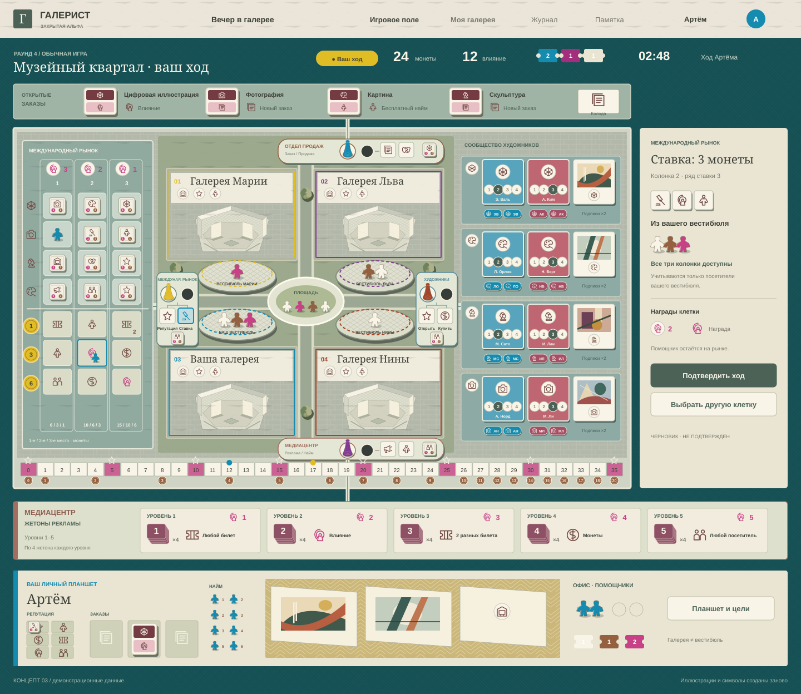
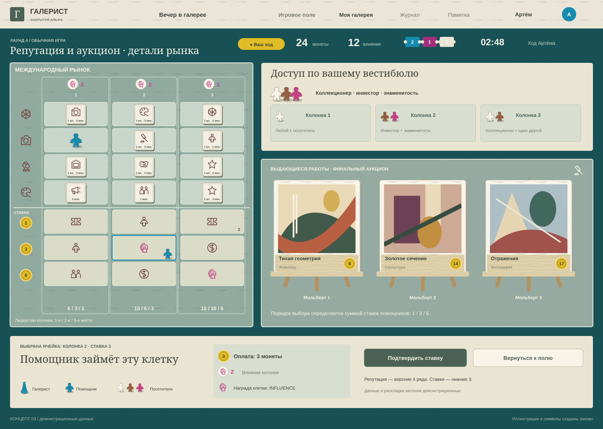
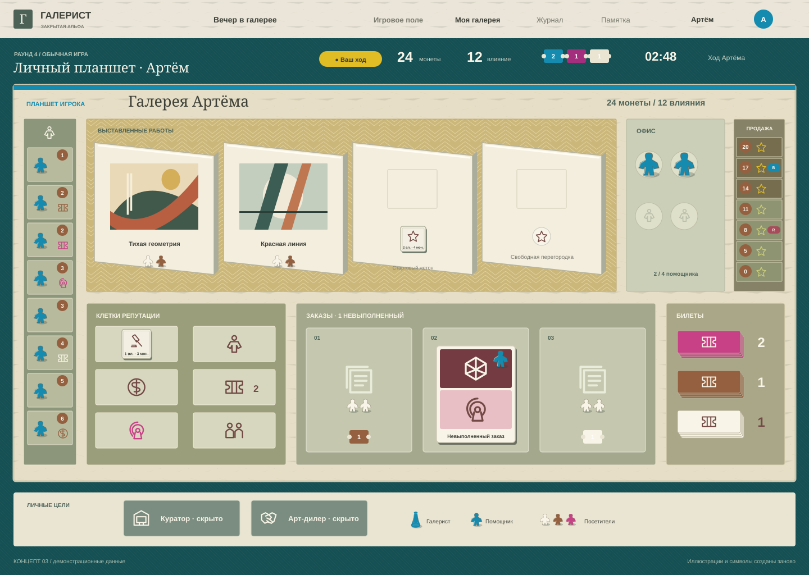

Открыть новую компоновку Full HD →
Добавлены четыре открытых заказа с колодой, квадратные жетоны репутации на рынке и у локаций, подробный планшет игрока. Визуальный концепт, данные демонстрационные.
01 · Игровое поле · заказы и жетоны репутации

02 · Международный рынок и финальный аукцион

03 · Планшет игрока · галерея, репутация и заказы
